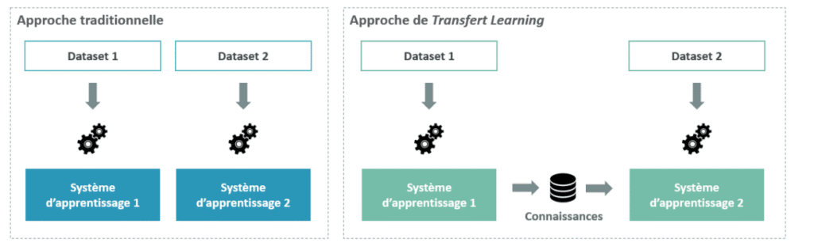

Plutôt que de reconstruire un modèle à partir de zéro, on peut utiliser l'apprentissage par transfert. L'apprentissage par transfert utilise un modèle "pré-entraîné" sur une tâche similaire à la tâche cible, puis après "transfert" les connaissances déjà apprises pour la nouvelle tâche. Cette approche tire parti des caractéristiques génériques apprises par le modèle initial, le modèle n'a donc pas à apprendre certaines features pour la nouvelle tâche, accélérant donc l'apprentissage. On réduit aussi au passage le nombre de données requises pour l'entraînement du modèle. 
En réduisant le temps d'entraînement du modèle, on réduit évidemment son impact environnemental. Cette méthode s'applique principalement à des domaines ou les ressources sont limitées, et elle est rendu possible grâce à la disponibilité de modèles pré-entraînés. Les grosses plateformes de cloud computing propose souvent des modèles génériques pré-entraînés pour certaines tâches, que l'on peut ré-entraîné directement sur leurs services. D'un autre côté, on a plusieurs sites qui référencent des modèles pré-entraînés. Le meilleur exemple est . Inutile que préciser que l'open-source au niveau des modèles et des données permettent des développement qui sont guidés par autres choses que des grandes sommes d'argent, et que l'existence de ce genre de site permet, indirectement, de réduire un peu l'impact de notre domaine.
Cette méthode ne s'applique que dans certains cas, mais elle peut se révéler intéressantes et efficace dans certaines situations. Pour approfondir le sujet, vous pouvez consulter les sources citées ci-dessous.
Sources :
- WEISS, Karl, KHOSHGOFTAAR, Taghi M., et WANG, DingDing. A survey of transfer learning. Journal of Big data, 2016, vol. 3, no 1, p. 1-40. papier
- source de l'image ci-dessus